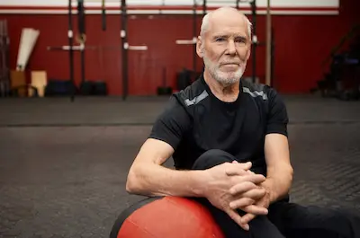

Fitness Masculino después de los 40: Rutina para Mantener Masa Muscular
Cambios fisiológicos después de los 40 y su impacto muscular
A partir de los 40 años, los hombres experimentan una disminución progresiva del 1-3% anual en masa muscular (sarcopenia), acelerándose después de los 50. Este proceso va acompañado de una reducción en la producción de testosterona (aproximadamente 1% anual), disminución en la síntesis de proteínas musculares y pérdida de unidades motoras. Estudios del Journal of Applied Physiology muestran que las fibras musculares tipo II (responsables de fuerza explosiva) son las más afectadas, perdiéndose hasta un 50% entre los 40-70 años.
Paralelamente, se reduce la elasticidad de los tendones y la producción de colágeno, aumentando el riesgo de lesiones. El metabolismo basal disminuye en un 2-4% por década, facilitando la acumulación de grasa visceral. Estos cambios no son inevitables: investigaciones demuestran que un programa de entrenamiento adecuado puede revertir hasta el 70% de estos efectos, manteniendo una composición corporal juvenil incluso pasados los 60 años. La clave está en adaptar el ejercicio a esta nueva realidad fisiológica.
Programa semanal de entrenamiento basado en evidencia
La rutina ideal combina 4 elementos fundamentales: entrenamiento de fuerza (3 días/semana), movilidad articular (2 días), cardio metabólico (1-2 días) y recuperación activa (2 días). Para fuerza, priorizar ejercicios multiarticulares con pesos libres: sentadillas búlgaras (3x8-10), press militar con barra (4x6-8) y remo con barra (3x8-10). La cadencia debe enfatizar la fase excéntrica (3 segundos bajando) para estimular la síntesis proteica, con descansos de 90-120 segundos entre series. Estudios muestran que esta combinación aumenta la testosterona libre un 18-22% en hombres maduros.
Los días de movilidad deben incluir ejercicios de ROM (rango de movimiento) completo: swings con kettlebell, rotaciones torácicas con banda y estocadas profundas con rotación. El cardio se optimiza con protocolos HIIT en bicicleta (8 rondas de 20" esfuerzo/40" descanso) que mejoran la sensibilidad a la insulina sin catabolismo muscular. Dos sesiones semanales de yoga restaurativo o rodillo de espuma mejoran la recuperación. Esta distribución permite ganar 1-1.5kg de músculo magro en 12 semanas incluso en hombres sedentarios previos.
Nutrición específica para hipertrofia madura
Después de los 40, el cuerpo requiere 25-30% más proteína por comida para maximizar la síntesis muscular. Distribuir 1.6-2g de proteína/kg de peso en 4-5 comidas diarias, priorizando fuentes completas como huevos enteros, carne de res magra y proteína de suero de leche. La leucina (3g por comida, presente en whey protein o carne) es crucial para activar la vía mTOR. Estudios del International Journal of Sports Nutrition muestran que hombres mayores absorben mejor las proteínas lácteas que las vegetales para construcción muscular.
Los carbohidratos deben ser estratégicos: 1-1.5g/kg en días de entrenamiento (arroz basmati, batata, quinoa), reduciendo a 0.5g/kg en días de descanso. Las grasas saludables (aguacate, aceite de oliva, nueces) son esenciales para la producción hormonal. Suplementos clave: creatina monohidrato (5g/día, mejora fuerza y cognición), vitamina D3+K2 (combate la resistencia anabólica) y omega-3 (reduce inflamación articular). Evitar ayunos prolongados (>14h) que aceleran la sarcopenia.
Manejo de recuperación y adaptaciones especiales
La recuperación después de los 40 requiere 48-72h entre entrenamientos para el mismo grupo muscular (vs 24-48h en jóvenes). La monitorización con dispositivos como Whoop o Oura Ring ayuda a ajustar la intensidad según variabilidad cardíaca (HRV). Técnicas avanzadas incluyen contrastes térmicos (sauna 15'+ inmersión fría 3') que aumentan la hormona de crecimiento un 200%, y masaje con pistola de percusión en grupos musculares grandes post-entreno.
Adaptaciones clave: reemplazar saltos por step-ups para proteger articulaciones, usar chalecos lastrados en lugar de pesas libres para ejercicios de carga axial, y priorizar máquinas guiadas cuando hay dolor articular. La terapia con luz roja/infrarroja (10-20min 3x/semana) acelera la reparación muscular. Para quienes tienen artritis, el entrenamiento en piscina con flotadores proporciona resistencia sin impacto. La consistencia a largo plazo (mínimo 9 meses continuos) proporciona los mayores beneficios en densidad ósea y masa magra.